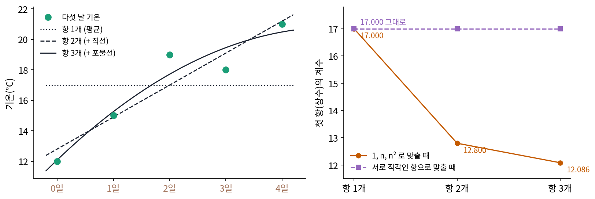
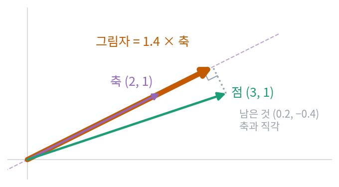
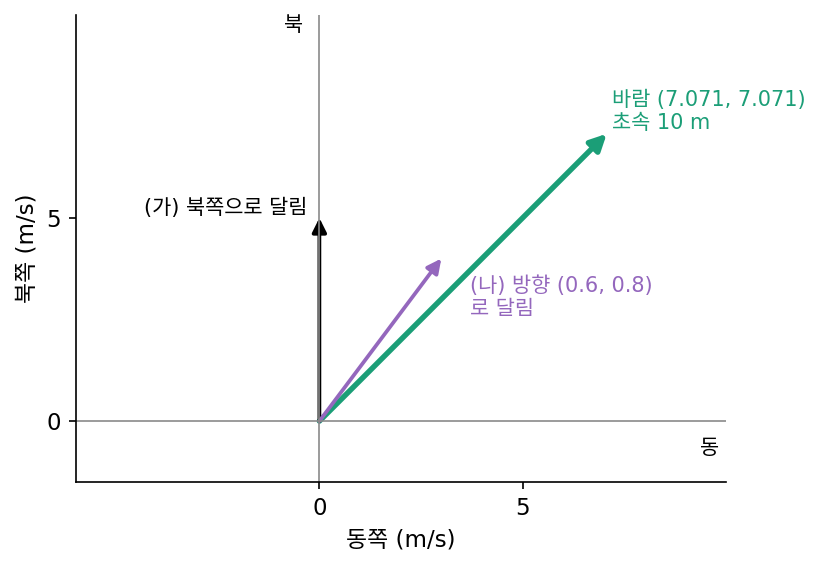
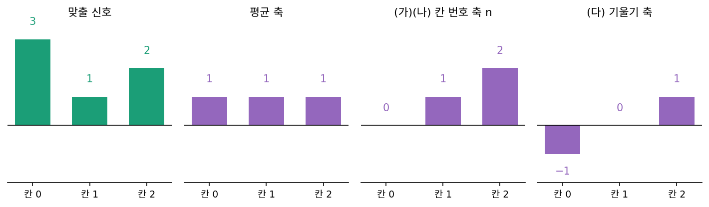
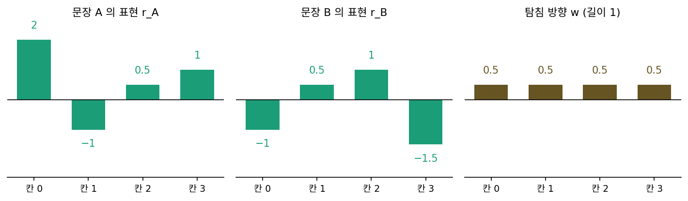

직교 사영: 계수는 내적 한 번으로
평균·기울기·굽음 좌표를 구할 때는 연립방정식 셋을 풀었는데, 칸이 셋이면 손으로도 되지만 1초짜리 소리 파일은 흔히 칸이 4만 개가 넘는다. 칸 N개짜리 연립방정식을 소거법으로 풀면 곱셈이 대략 N³/3번 들어서, N = 1000이면 3억 3천만 번이 넘는다. 게다가 축 하나를 더하거나 바꾸면 처음부터 다시 풀어야 하니, 계수 하나를 다른 계수와 상관없이 따로 구할 수는 없을까?
역사: 항을 하나 더하면 처음부터 다시
관측값에 식을 맞추는 사람들이 이 문제를 먼저 겪었다. 라플라스(Pierre-Simon Laplace)는 『확률의 해석적 이론』(1812년 초판, 1820년 판 부록)에서 행성 여섯 개의 관측 자료로 목성과 토성의 질량을 추정하는 최소 제곱 문제를 다루었다. 최소 제곱은 식과 관측값의 차이를 제곱해 더한 것이 가장 작아지도록 계수를 고르는 방법이다. 미지수가 여섯이라 그는 6 × 6 연립방정식을 손으로 풀어야 했지만, 오차의 성질을 따지는 대목에서는 다른 방법을 썼다. 방정식들을 행렬의 한 열에 직각인 방향으로 차례로 비춰 내려, 미지수를 하나씩 떼어 냈다. 수치해석학자 뵈르크(Åke Björck)와 동료들은 이 대목이 지금 「그람–슈미트 과정」이라 부르는 방법의 원형이라고 짚었다.
덴마크의 그람(Jørgen Pedersen Gram)은 대학 졸업 뒤인 1875년 하프니아 보험 회사에 들어가 일하면서 확률과 수치 계산을 연구했다. 1879년 덴마크어 박사 논문과 1883년 독일어 논문 「최소 제곱법으로 실함수를 급수로 펼치기에 대하여」에서 그는 함수를 여러 항의 합으로 펼칠 때 최소 제곱으로 계수를 정하는 문제를 다루었다. 거듭제곱 1, n, n², …을 항으로 쓰면 아래 그림처럼 항을 하나 더할 때마다 앞 항들의 계수가 모두 바뀐다. 다섯 날 기온을 평균 하나로 맞추면 상수가 17.000인데, 직선을 더하면 12.800, 포물선까지 더하면 12.086이 된다. 항들을 미리 서로 직각이 되게 고쳐 두면 앞의 계수는 그대로이고 새 항의 계수만 하나 더 구하면 된다. 1907년 슈미트(Erhard Schmidt)가 적분 방정식 논문에서 같은 과정을 쓰면서 그람의 방법과 본질적으로 같다고 밝혔고, 두 사람의 이름을 이어 부른 것은 1935년 웡(Y. K. Wong)의 논문이 처음인 것으로 보인다.


6 × 6 연립방정식이면 지금은 np.linalg.solve 한 줄이잖아요. 라플라스는 왜 굳이 다른 방법까지 썼어요?

손으로 풀면 곱셈과 뺄셈을 하나하나 종이에 적어야 했어요. 중간에 한 줄만 틀려도 그 뒤가 다 틀리고요. 그런데 식에 항을 하나 더하면 어떻게 됐죠?

그림에서 상수 항의 계수가 17.000, 12.800, 12.086으로 바뀌었어요. 음, 앞의 계수가 다 바뀌니까 이미 손으로 푼 것을 버리고 더 큰 연립방정식을 처음부터 다시 풀어야 했겠네요.

그래요. 함수를 여러 항으로 펼칠 때는 항을 몇 개 써야 충분한지 해 보기 전에는 알기 어려워요. 항을 하나 늘려 볼 때마다 처음부터 다시 푸는 일을 손 계산으로 되풀이하기는 힘들었죠.

저는 다항식 차수를 바꿔 가며 몇 번이고 다시 맞추는데, 그때마다 계수가 다 바뀌는 걸 그러려니 했어요. 다시 푸는 데 1초도 안 걸리니까요.

항들을 서로 직각으로 고쳐 두면 앞의 계수가 그대로라고 했잖아요. 직각이라는 성질이 계산에서 무엇을 지워 주길래 그렇게 될까요?
평균·기울기·굽음은 서로 직각이다
두 신호의 칸끼리 곱해 더한 수를 내적이라 하고 x·e로 적는다. 화살표 둘이면 「길이 × 길이 × 사이 각의 코사인」이고, 사이 각이 90°이면 0이다. 내적이 0인 두 축을 서로 직교한다(직각이다)고 한다. 평균·기울기·굽음 세 축끼리 내적을 구해 보자.
- e₁·e₂ = 1·(−1) + 1·0 + 1·1 = 0
- e₁·e₃ = 1 − 2 + 1 = 0
- e₂·e₃ = −1 + 0 + 1 = 0
셋 다 0이므로 세 축은 서로 직교한다. 이제 x = c₁e₁ + c₂e₂ + c₃e₃의 양변에 e₁을 내적하면, e₁·e₂와 e₁·e₃가 0이라 c₁(e₁·e₁)만 남는다.
x·e₁ = c₁ (e₁·e₁)
다른 계수가 저절로 지워졌다. (3, 1, 2)·(1, 1, 1) = 6이고 e₁·e₁ = 3이므로 c₁ = 6/3 = 2. 같은 방법으로 x·e₂ = −3 + 0 + 2 = −1, e₂·e₂ = 2라서 c₂ = −0.5. x·e₃ = 3 − 2 + 2 = 3, e₃·e₃ = 6이라서 c₃ = 0.5. 연립방정식을 풀어 얻은 (2, −0.5, 0.5)가 내적 셋으로 나왔고, 계수 하나에 곱셈 세 번이면 된다. 칸이 N개여도 계수 하나에 N번, 모두 구하는 데 N²번이니, N = 1000이면 소거법의 3억 3천만 번 대신 100만 번이다.
그림으로 보면 이 계수는 그림자다. 평면의 점 (3, 1)과 축 (2, 1)에서 c = (3, 1)·(2, 1)/(2, 1)·(2, 1) = 7/5 = 1.4이고, 1.4 × (2, 1) = (2.8, 1.4)는 점에서 축으로 수직으로 내린 발이다. 점에서 그 발을 뺀 나머지 (0.2, −0.4)는 축과 내적이 0, 축에 직각이다. 이렇게 점을 축에 수직으로 비춰 내려 그 축 방향의 성분만 남기는 것을 직교 사영 (그림자 내리기 / orthogonal projection)이라 한다. 축들이 서로 직교하면 신호를 축마다 따로 사영한 계수가 그대로 그 기저의 좌표이므로, 항들을 서로 직각으로 고쳐 두면 계수를 축마다 따로 구할 수 있다. 지금 그람–슈미트 과정이라 부르는 것이 그 고치는 방법이다.

축들이 서로 직교하지 않을 때도 내적으로 계수를 구하면 어떻게 될지는 아래 문제 5에서 본다.
ML에서: 선형 탐침은 방향 하나로의 사영이다
학습된 신경망의 중간 층이 「이 문장이 긍정인가」 같은 정보를 담고 있는지 알고 싶을 때, 그 층의 벡터를 그대로 두고 그 위에 선형 분류기 하나만 학습시켜 본다. 알랭(Guillaume Alain)과 벤지오(Yoshua Bengio)는 2016년 이런 분류기를 「선형 분류기 탐침」이라 부르고, 층마다 탐침의 정확도를 재서 정보가 어느 층에서 드러나는지 보였다. 선형 분류기가 하는 계산은 표현 벡터 r과 무게 벡터 w의 내적 하나에 문턱을 대는 것이다. 무게 벡터의 길이를 1로 맞추면 그 내적은 r을 w 방향 축에 직교 사영한 계수이므로, 탐침은 표현에서 방향 하나의 좌표만 읽고 나머지 방향은 모두 버린다. 그 방향을 어떻게 고르고, 아무 방향이나 고르면 어떻게 되는지는 아래 문제 6에서 숫자로 본다.
문제 4. 자전거와 바람
남서쪽에서 불어오는 바람이 북동쪽으로 초속 10 m 로 불 때, 동쪽을 가로, 북쪽을 세로로 잡으면 바람은 (7.071, 7.071) 이다. (가) 북쪽으로 달릴 때 뒤에서 미는 바람과 옆에서 부는 바람은 각각 얼마인가? (나) 방향 (0.6, 0.8) 로 달리면? (다) 「뒷바람 + 옆바람 = 바람의 세기」인가?

(가)는 북쪽 성분이 7.071이니까 뒷바람 7.071, 옆바람도 7.071이요. (다)는 7.071 + 7.071 = 14.14니까 10이 아니네요. 바람이 둘로 나뉘면서 세진 건가요?
뒷바람과 옆바람은 서로 직각이에요. 직각인 두 변으로 빗변을 구할 때 어떻게 했죠?
아, 피타고라스요. √(7.071² + 7.071²) = 10이에요. 더하면 안 되고 제곱해서 더해야 하네요.
(나)는 북쪽이 아니라서 성분을 바로 못 읽겠네. 그래도 달리는 방향 (0.6, 0.8)이 길이 1이니까 내적을 하면 뒷바람이 나올 것 같아. 0.6 × 7.071 + 0.8 × 7.071 = 9.899.
옆바람은 어떻게 구해?
옆바람은 그 방향에 직각인 (0.8, −0.6)과의 내적이라 0.8 × 7.071 − 0.6 × 7.071 = 1.414. 제곱해서 더하면 98 + 2 = 100이야.

방향을 바람 쪽으로 틀수록 뒷바람이 커지고 옆바람이 줄어요. 그래도 두 직각 축의 제곱합은 늘 100, 바람 세기의 제곱이에요.

물리 시간에 비탈면 위 물체의 무게를 비탈 방향과 수직 방향으로 나누던 게 직교 사영이었네.
문제 5. 칸 번호를 축으로 쓰면
(3, 1, 2) 를 평균 축 (1, 1, 1) 하나로 최소 제곱 맞추면 계수는 2 다. (가) 여기에 칸 번호 축 n = (0, 1, 2) 를 더해 두 축으로 최소 제곱 맞추면 평균 축의 계수는 그대로 2 인가? (나) 칸 번호 축의 계수를 내적으로 x·n / n·n 처럼 구하면 맞는가? (다) 기울기 축 (−1, 0, 1) 을 더하면 어떻게 되는가?

축을 하나 더한 거니까 평균 계수는 2 그대로겠죠. (나)는 x·n = 0 + 1 + 4 = 5, n·n = 5니까 1이요.
계수 2와 1로 되살려 볼래요? 2(1, 1, 1) + 1(0, 1, 2)는요?

(2, 3, 4)요. (3, 1, 2)랑 전혀 안 닮았어요. 기울기가 거꾸로예요.

잠깐, 두 축끼리 내적부터 해 보자. (1, 1, 1)·(0, 1, 2) = 3이야. 직교가 아니네.
직교가 아닌 두 축에 따로따로 사영하면 무엇이 겹칠까요?
칸 번호 축에도 평균 성분이 섞여 있으니까… 둘을 따로 사영하면 평균을 두 번 센 거예요.

그럼 제대로 풀면 얼마야?
두 축을 함께 놓고 최소 제곱으로 풀면 2.5(1, 1, 1) − 0.5(0, 1, 2) = (2.5, 2.0, 1.5)고, 평균 축 계수가 2에서 2.5로 바뀌어.
그럼 (다)에서 칸 번호 축 대신 기울기 축 (−1, 0, 1)을 쓰면요? 먼저 기울기 축과 평균 축의 내적부터 구해 볼래요?
(1, 1, 1)·(−1, 0, 1) = 0이에요. 이번에는 직교하니까 평균 계수는 2 그대로 두고, 기울기 계수만 따로 구하면 −0.5예요.
맞춘 값은? 아까랑 달라?
(2.5, 2.0, 1.5)로 칸 번호 축을 쓸 때랑 같아. 남는 것 (0.5, −1, 0.5)는 0.5 × 굽음 축이고.
맞춘 값은 같은데 계수는 달랐네요. 두 축이 무엇이 다를까요?

같은 평면을 펼치는 두 축인데, 직교하게 고르면 계수를 하나씩 따로 구할 수 있어요. 어, 칸 번호 축에서 평균 성분 (1, 1, 1)을 빼면 (−1, 0, 1)이 되네요. 기울기 축은 칸 번호 축을 평균 축에 직각이 되게 고친 거예요.

그람–슈미트 과정이 하는 게 이거였네요. 앞의 축에 든 성분을 빼서 직각으로 고치는 거요. 기온 그림에서 상수가 17에서 12.8로 바뀌던 것도 n이 평균을 품고 있어서였고요.
문제 6. 문장 임베딩에서 「긍정」 읽기
탐침의 무게 방향이 길이 1인 w = (0.5, 0.5, 0.5, 0.5) 이다. (가) 문장 A 의 표현 rA = (2, −1, 0.5, 1) 과 문장 B 의 rB = (−1, 0.5, 1, −1.5) 의 탐침 점수(내적)를 구하라. (나) rA 에서 탐침이 버리는 부분은 무엇인가? (다) 64칸짜리 표현 2,400개를 만들었다. 각 표현은 숨긴 방향 u(길이 1)에 라벨 ±1 을 곱한 것에 칸마다 표준 정규 노이즈를 더한 것이다. 학습용 400개로 탐침 방향을 정하고 시험용 2,000개로 정확도를 쟀다. 탐침 방향, u 그대로, 아무 방향, u 의 성분이 가장 큰 칸 하나로 가르면 정확도는 각각 얼마쯤일까?

(가)는 0.5 × (2 − 1 + 0.5 + 1) = 1.25, B는 0.5 × (−1 + 0.5 + 1 − 1.5) = −0.5예요. A가 긍정, B가 부정이요.
(나)는요? 탐침은 네 칸 중에 무엇을 보는 거죠?
네 칸을 다 보는 거 아닌가요? 다 곱해서 더하니까요.
칸은 다 쓰지만 보는 방향은 하나야. 그림자 1.25 × w = (0.625, 0.625, 0.625, 0.625)를 빼면 (1.375, −1.625, −0.125, 0.375)가 남는데, 이건 w와 내적이 0이야. 이 남은 부분을 아무리 바꿔도 탐침 점수는 1.25 그대로야.
(다)를 스크립트로 돌려 보면 어떨까요?

두 라벨 묶음의 평균 차이를 길이 1로 맞춰 탐침 방향으로 썼더니 u와의 코사인이 0.938이고, 시험 정확도 0.830이에요. u를 그대로 쓰면 0.845, 아무 방향이면 0.435로 절반 근처, u의 성분이 가장 큰 칸 하나(그 칸에서 u의 성분은 0.353)만 보면 0.646이에요.

칸 하나만 보면 정보가 64칸에 흩어진 방향의 일부만 사영돼서 약해지는구나. 방향이 맞아야 정보가 다 모여. 문제 3에서 임베딩을 90° 돌려도 점수가 같던 거랑 같은 얘기야. 뜻은 칸이 아니라 방향에 있어.
그래요. 그리고 탐침이 잘 맞는다고 모델이 그 방향을 「쓴다」는 뜻은 아니에요. 그 방향으로 사영하면 읽힌다는 것까지만 말해 줘요.

성적표에서 「수학 실력」을 볼 때 한 과목 점수(칸 하나)보다 수학 관련 과목들을 고르게 더한 점수(방향 하나로의 사영)가 더 믿을 만한 것과 비슷하네요.